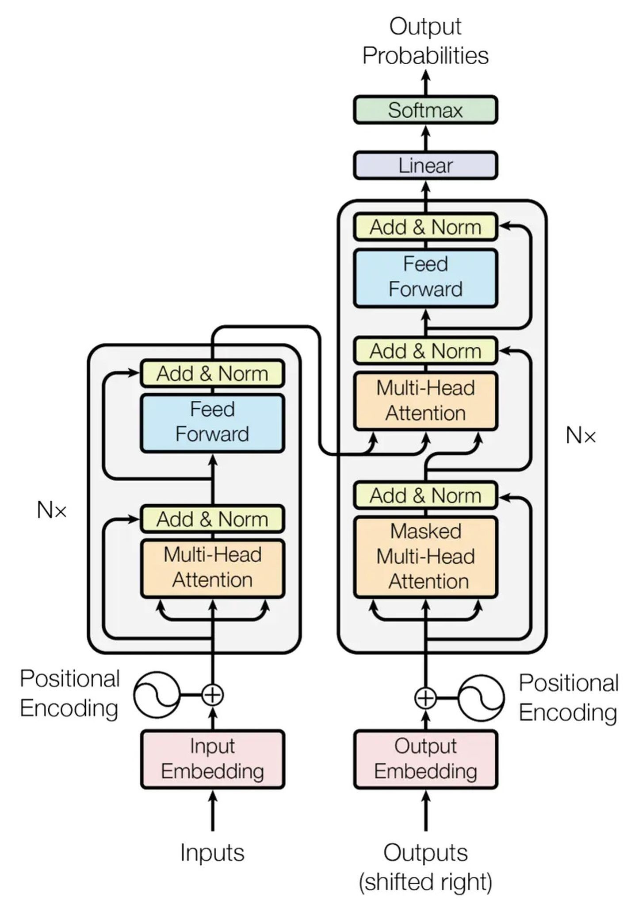
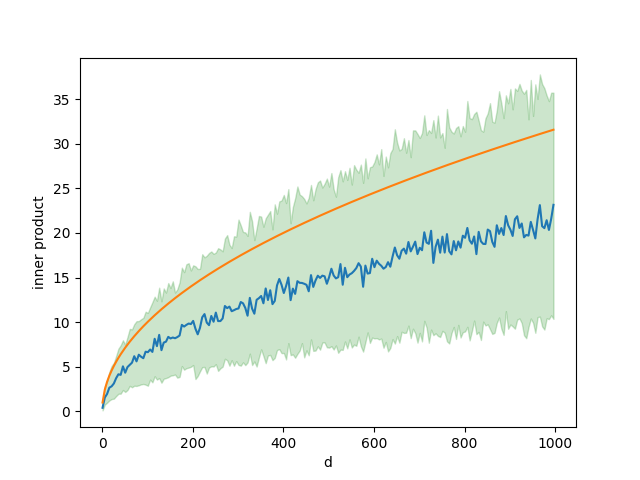

# 从零开始的Transform
> Transformer模型是2017年Google在[Attention is All You Need](https://arxiv.org/abs/1706.03762)论文中提出的。它最大的特点是引入了注意力机制(*Attention*)，并行化的处理提升了传统RNN循环输入的速度。
## A High-Level Look at Transform
论文[Attention is All You Need](https://arxiv.org/abs/1706.03762)使用下图展示了Transformer模型结构，这幅架构图从底层细节上展示了模型，如果没有相关知识会难以理解。下面我们会从顶向下的视角解析Transformer。

如果把Transformer模型看作一个黑盒(black box)，那么对于机器翻译(machine translation)任务而言，输入是源语言(source)中的一个句子，输出则是目标语言(target)中对应的翻译结果。

打开黑盒，可以看到Transformer模型由编码组件(encoders)，解码组件(decoders)和两者之间的连接组成。
编码组件都是由**N**个编码器堆叠串联而成，解码组件同样是由**N**个解码器堆叠。需要注意的是两个组件之间的连接，在[Attention is All You Need](https://arxiv.org/abs/1706.03762)原文中，是把解码组件的最终输出作为输入送入到每个解码组件中的解码器中。但是这样的连接方式不是唯一的方式，也可以有不同的连接方式。
注意，编码组件中的**N**个编码器结构相同，但参数不同。解码组件中也是一样。每个编码器由自注意力层和前向层串联而成，自注意力层能够发现句子中单词与其他单词之间的关系，前向层则可以进行特征变换。解码器的结构与编码器相似，但是在自注意力层和前向层中加入了编码器-解码器注意力层， 这一层用于融合源域与目标域的信息。
## Self-Attention
### 核心思想
一个句子经过分词之后变为由单词组成的顺序表，每个单词都可以经过词嵌入(embedding)变为一个词向量(Word Embedding)。自注意力机制能够表征句中词汇之间的相关性。对于每个词向量，需要生成**Query**、**Key**、**Value**三个表示向量，`q`向量和`v`向量的内积值代表两个词向量之间的相关系数，`v`向量则是对原始词向量的特征变换。经过一次自注意力机制，新的词向量融合了句子中各词之间的相关性。
下面以一个由$$L$$个单词组成的句子为例，每个单词经过embedding之后变为长度为`d`的词向量，则此句子可以用一个$$L \times d$$的矩阵表示，即`seq = {x1, x2, ..., xL} `。对于位置`i`处的词向量$$x_i$$，它和位置j处词向量$$x_j$$的相关分数$$score(i, j) = < q_{i}, k_{j} > $$，其中$$q_i = W^Q x_i, k_j = W^K x_j$$。因此对于词向量$$x_i$$可以求得`L`个相关性分数，此时分数尚未经过归一化，不同词向量的相关性分数无法比较，因此需要对这$$L$$个相关性分数进行softmax归一化。但是softmax不具有放缩不变性，即输入经过放缩之后，softmax输出分数会发生变化。长度wei$$d$$的

```latex
Q, K, V = W^qX, W^kX, W^vX
```
```latex
\text{Attention}(Q, K, V) = \text{softmax}(\frac{QK^\top}{\sqrt{d}})V
```
### 实现细节
### 代码实现
```python
class ScaledDotProductAttention(nn.Module):
''' Scaled Dot-Product Attention '''
def __init__(self, temperature, attn_dropout=0.1):
super().__init__()
self.temperature = temperature
self.dropout = nn.Dropout(attn_dropout)
def forward(self, q, k, v, mask=None):
# q x k^T
attn = torch.matmul(q / self.temperature, k.transpose(2, 3))
if mask is not None:
# 把mask中为0的数置为-1e9, 用于decoder中的masked self-attention
attn = attn.masked_fill(mask == 0, -1e9)
# dim=-1表示对最后一维softmax
attn = self.dropout(F.softmax(attn, dim=-1))
output = torch.matmul(attn, v)
return output, attn
```
```python
class MultiHeadAttention(nn.Module):
''' Multi-Head Attention module '''
def __init__(self, n_head, d_model, d_k, d_v, dropout=0.1):
super().__init__()
self.n_head = n_head
self.d_k = d_k
self.d_v = d_v
# 三个线性层做矩阵乘法生成q, k, v.
self.w_qs = nn.Linear(d_model, n_head * d_k, bias=False)
self.w_ks = nn.Linear(d_model, n_head * d_k, bias=False)
self.w_vs = nn.Linear(d_model, n_head * d_v, bias=False)
self.fc = nn.Linear(n_head * d_v, d_model, bias=False)
# ScaledDotProductAttention见下方
self.attention = ScaledDotProductAttention(temperature=d_k ** 0.5)
self.dropout = nn.Dropout(dropout)
self.layer_norm = nn.LayerNorm(d_model, eps=1e-6)
def forward(self, q, k, v, mask=None):
d_k, d_v, n_head = self.d_k, self.d_v, self.n_head
sz_b, len_q, len_k, len_v = q.size(0), q.size(1), k.size(1), v.size(1)
residual = q
# Pass through the pre-attention projection: b x lq x (n*dv)
# b: batch_size, lq: translation task的seq长度, n: head数, dv: embedding vector length
# Separate different heads: b x lq x n x dv.
q = self.w_qs(q).view(sz_b, len_q, n_head, d_k) # project & reshape
k = self.w_ks(k).view(sz_b, len_k, n_head, d_k)
v = self.w_vs(v).view(sz_b, len_v, n_head, d_v)
# Transpose for attention dot product: b x n x lq x dv
q, k, v = q.transpose(1, 2), k.transpose(1, 2), v.transpose(1, 2)
if mask is not None:
mask = mask.unsqueeze(1) # For head axis broadcasting.
# (batchSize, 1, seqLen) -> (batchSize, 1, 1, seqLen)
q, attn = self.attention(q, k, v, mask=mask)
# Transpose to move the head dimension back: b x lq x n x dv
# Combine the last two dimensions to concatenate all the heads together: b x lq x (n*dv)
# view只能用在contiguous的variable上
q = q.transpose(1, 2).contiguous().view(sz_b, len_q, -1)
q = self.dropout(self.fc(q))
# add & norm
q += residual
q = self.layer_norm(q)
return q, attn
```
-------
## Reference
- [The Illustrated Transformer](http://jalammar.github.io/illustrated-transformer/)
- [The Annotated Transformer](https://nlp.seas.harvard.edu/2018/04/03/attention.html)
- [Transformer代码及解析(Pytorch)](https://zhuanlan.zhihu.com/p/345993564)
- [NLP 中的Mask全解](https://zhuanlan.zhihu.com/p/139595546)